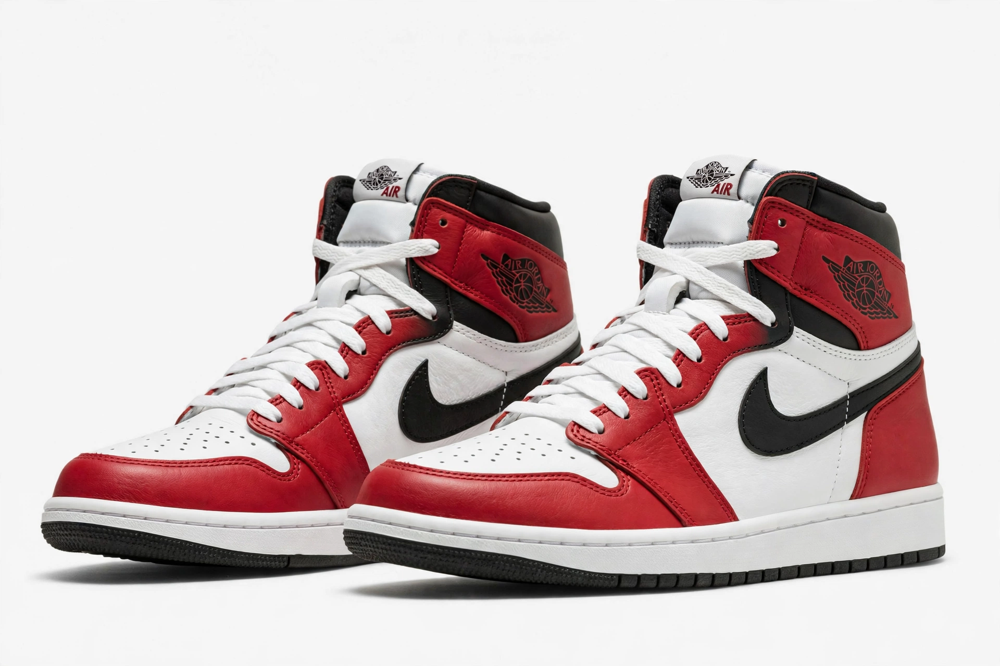

Air Jordan
From Wikipedia, the free encyclopedia
| Air Jordan | |
 | |
| Type | Basketball shoes and athletic apparel |
|---|---|
| Manufacturer | Nike, Inc. (Jordan Brand) |
| Introduced | 1 April 1985 |
| Named for | Michael Jordan |
| Designer | Peter Moore (I), Tinker Hatfield (III onward) |
Air Jordan is a line of basketball shoes, clothing and accessories produced by Nike, Inc., created for and endorsed by Hall of Fame basketball player Michael Jordan. The original Air Jordan sneaker, designed by Peter Moore, was released on 1 April 1985 after Jordan signed a landmark five-year, $2.5 million endorsement deal with Nike the previous year — a deal championed by Nike executive Sonny Vaccaro and agreed to by Phil Knight.
History
Nike hoped to sell $3 million of Air Jordans in the first year; it sold $126 million. The black-and-red colourway was famously said to have been banned by the NBA for violating uniform rules, a story Nike turned into a celebrated advertisement. Annual numbered models followed Jordan's career; designer Tinker Hatfield's Air Jordan III (1988), with its visible Air unit and elephant print, persuaded Jordan to stay with Nike. In 1997 the line was formalized as the Jordan Brand subsidiary. Retro reissues of classic models drive a vast sneaker-collecting and resale culture; the "Jumpman" logo, derived from a 1985 photograph of Jordan dunking, is among the most recognized marks in sport.
Cultural impact
Air Jordans are credited with creating modern sneaker culture, linking athletic footwear to fashion, hip-hop and streetwear. Michael Jordan reportedly earned more from the brand annually in retirement than during his playing career, and the brand generates several billion dollars in yearly revenue for Nike.
See also: Phil Knight, Swoosh